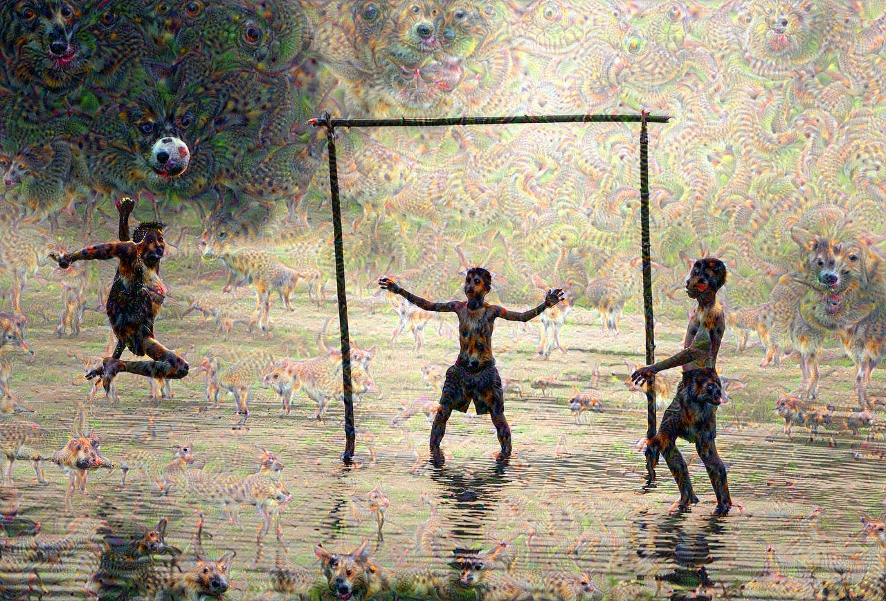
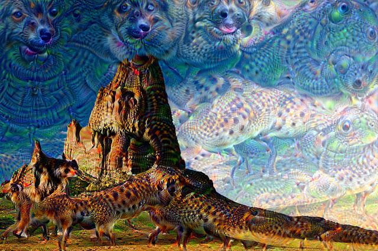
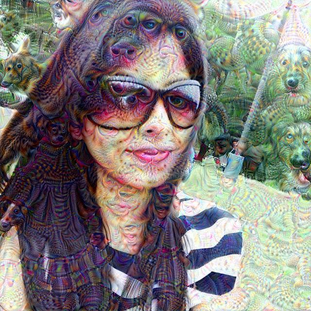
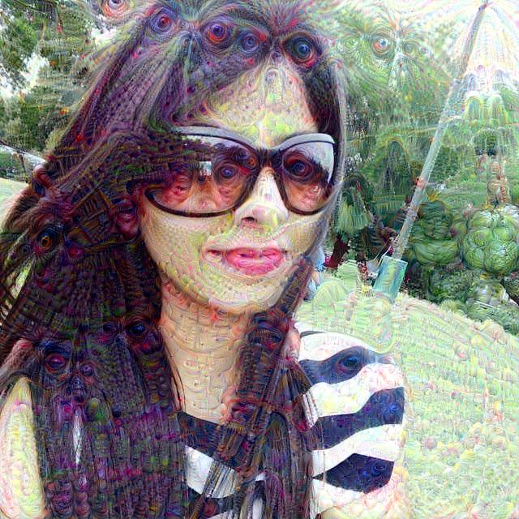

Kabir Ahuja
Deep Learning EnthusiastDreaming with Neural Nets: Deep Dream
Hi guys, as promised in my last blog, today we will discuss and implement the very famous 'Deep Dream' . Deep dream is a very cool application of Convolutional Neural Networks, in which we feed an image to a pretrained conv net and the convnet dreams on the image. So lets see some images to get a better intuition.
Original Image
Dreamed Image
Original Image

Dreamed Image
So as you can see there are no dogs or some other weird things in the original image, but we can see those things in the dreamed image. So lets discuss about it in quite a bit of detail.
Why Deep Dream
Before we understand the theory behind deep dream and its implementation, lets first see why are we doing it in the first place. No doubt it produces some very cool(sometimes creepy too :p) images, but is that it? The answer is obviously no. So, the Conv nets have become immensely popular for tasks involving image classification, object recognition, localisation etc etc, the accuracy produced by conv nets is indeed commendable, some of the deep conv net architecures can give around 95% accuracy on Image net(Image net is dataset of 1000 kinds of images, and the job of the conv net is to classify them). We know that the conv nets perform extremely well on the images, but a very little is known about how they are able to perform so well. Its easy to explain by saying, that in a conv net we have filters which look for particular features in images. But how do we prove that its indeed true or have a sort of intuition of what these filters are doing. Deep Dream does exactly that, it helps us to visualise how the conv nets actually work. As we saw in the above images, we were able to produce images with dogs in them without having dogs in the original images, So how it works is, we take a pre trained conv net which was trained for an image classification task and when we feed our image to it, it tries to look for the kinds of features it has looked in the images it was trained on. Lets see a more concrete explanation.
How Deep Dream Works
Lets break it down how the deep dream works. We will take a pretrained conv net as i mentioned earlier. As we know that a conv net is basically a collection of different types of layers(conv layers, pool layers, dropouts etc),
and these layers represent the different activations of the input, and the activations are produced by convolving the input with different filters, so if a filter looks for dog like features in the input, it will give a higher value of
activation if it finds such features in the input. So what we will do is feed our image to the conv net, and take the activation at a particular layer and we will try to maximize that activation. Lets say we have a layer 'l' in our conv net
which is produced by a filter looking for dog like features in the image, so when i feed my image to the net and check the activation at that layer, i will get some value for the activation, so now what i will do is start making changes in the image
so that i maximize that activation, just like we change parameters while training a neural network to minimize the loss function, this time instead we area changing our input to maximize the activation at a particular layer.
Like we use gradient descent to minimize the loss function while training, here we will use gradient ascent(same as the gradient descent, only difference being we will add the gradients to parameters which in our case is the image, while updating them)
on our image to maximize the activation scores at a particular layer.The update equation can be written as:
I = I + learning_rate*grad
where I is our image and grad is the gradient of the activation score at a layer(which we want to maximize) with respect to the Image.
And thats pretty much it, concept behind deep dream is really simple and very intuitive and now we are ready to see its implementation.
Getting the pre trained Convnet
As I have already mentioned like a hundred times now, in deep dream we need a pre trained conv net. For the purpose of this tutorial we will be using Google's Inception net which was winner of Image net challange in 2015(maybe :/). So First we will download the model, and then construct a computational graph in tensor flow from the model. Lets see the code, then i'll explain it in detail.
#downloading Inception Net
url = ('https://storage.googleapis.com/download.tensorflow.org/models/'
'inception5h.zip')
basename = 'inception5h.zip'
data_dir = ''
def download_model():
local_zip_file = os.path.join(data_dir,basename)
if not os.path.exists(local_zip_file):
model_url = urllib.request.urlopen(url)
with open(local_zip_file) as output:
output.write(model_url.read())
#Extracting the downloaded
#zip file of the model.
print('Extracting',local_zip_file)
zip_ref = zipfile.ZipFile(local_zip_file,'r')
zip_ref.extractall(data_dir)
zip_ref.close()
#Constructing computational graph
#from downloaded model
#the name of the proto buffer file
#of the inception model
model_fn = 'tensorflow_inception_graph.pb'
graph = tf.Graph()
#Starting an Interactive Session
sess = tf.InteractiveSession(graph = graph)
#opening the protobuffer
#file containing the graph.
with tf.gfile.FastGFile(os.path.join(data_dir,model_fn),'rb') as f:
#graph_def will contain our graph object
#this statement creates an empty graphdef object
graph_def = tf.GraphDef()
#Reading from the pb file
#and parsing the graph object to graph_def
graph_def.ParseFromString(f.read())
#placeholder for input_image
input_image = tf.placeholder(tf.float32,name='input_image')
#the mean of the images on which
#inception was trained on
image_net_mean = 117.0
#adding an extra dimension,since inception
#net expects the input in this form
#Also subtracting the imagenet mean from the image
image_prepro = tf.expand_dims(input_image - image_net_mean,0)
#Importing the graph from graph_def
tf.import_graph_def(graph_def, {'input':image_prepro})
#Storing the name of different layers of
#inception net in layers list
#we are only storing the names of Convolutional layers.
layers = [op.name for op in graph.get_operations() if op.type=='Conv2D' and 'import/' in op.name]
So in the first few lines of the code we downloaded the inception net using the urllib module of python and extracted the contents using the ZipFile module.
The extracted files will contain a file named 'tensorflow_inception_graph.pb', pb is basically a protocol buffer file. A protocol buffer is a text file which conatins
the data structures of our model and generates classes and objects in programming languages like python, C when loaded. So the 'tensorflow_inception_graph.pb' file will
be basically used to load the pretrained inception net model. 'gfile.FastGFile' is just a method of tensor flow for opening files. The graph_def object contains the computational
graph, so what we do is create an empty graph_def object first and then read the pb file and parse it to the graph_def object using ParseFromString method. Hence we obtain
our computational graph in graph_def object and then we load the graph into the tensorflow session using import_graph_def method of tensor flow. Finally we store the name of
different layers of the conv net in a ist called 'layers'. Lets print the list and see what we get.
Now we have our full computational graph of the model, and now we can easily calculate the activations at different layers as well as can optimize various parameters which we will see soon.
Getting the gradients
As discussed above, to update our image first we must calculate the gradients of the activation scores of the layer with respect to the image. Now the problem is, calculating gradients with respect to very large images will eat up a lot of RAM, to avoid this what we do is calculate the gradients with respect to the small portions(called tiles) of the image at a time. Lets see the code:
#tiled_gradients
#this function returns the actual
#size of the tiles in which we can
#divide our image
def get_tile_size(num_pixels,tile_size=512):
num_tiles = int(round(num_pixels/tile_size))
num_tiles = max(1,num_tiles)
actual_tile_size = int(num_pixels/num_tiles)
return actual_tile_size
#Since it would be computationally expensive
#to calculate the gradient with respect to the
#full image, instead we will calculate the gradients
#small portions(tiles) of the image.
def tiled_gradients(img,gradients,tile_size=512):
'''
inputs:
img: The input image
gradients: A gradient node which holds the
the operations to find the gradient w.r.t
some input
tile_size: smallest portion of the image
of which we want to calculate the gradient
at a time
'''
#getting the height and width of the image
w,h = img.shape[:2]
#tile size along x axis
x_tile_size = get_tile_size(w,tile_size)
#tile size along y axis
y_tile_size = get_tile_size(h,tile_size)
x_start = 0
grad = np.zeros_like(img)
while(x_start < w):
#last x cordinate of the tile
x_end = x_start + x_tile_size
#shouldnt be greater than the width
#of the image
x_end = min(w,x_end)
y_start = 0
while(y_start < h):
y_end = y_start + y_tile_size
y_end = min(h,y_end)
#tile from the image
img_tile = img[x_start:x_end,y_start:y_end,:]
#calculating gradients w.r.t the tile of the image
g = sess.run(gradients,{input_image : img_tile})
#normalising gradients
g /= (np.std(g) + 1e-8)
grad[x_start:x_end,y_start:y_end,:] = g
#moving to the next tile
y_start = y_end
#next tile
x_start = x_end
return grad
The first method 'get_tile_size' takes the input as num_pixels(height or width) and tile size and returns the actual tile size according to the pixels. Lets say we have an image of 1000x1000 px
and we have given the tile size as 512, it is not possible to divide a 1000x1000 image to 512x512 px tiles, since the size of the image can be anything, this function gives us the actual size
of the tile nearest to the size given by us in which we can divide our image.
In the second method 'tiled gradients' we calculate the gradients. It takes as input, the image and the gradients which is a tensor that holds operations necessary to calculate the gradient.
After that we using the get_tile_size method we find the size of the tiles in both x and y direction. Then we iterate in a loop considering all the tiles of the image and find the gradient with respect to each of them.
If the 'gradients' tensor is confusing you, dont worry it will become clear once we discuss the 'train' function
Let the Training Begin
Now that we have our pre trained model as well as a method to find the gradients, we can start the training process. So what we will do during training is, feed the image to the convnet, find activations at a given layer and then
calculate the score by taking the mean of these activations. Now our purpose in life is to maximize this score. We will use the gradients of the score with respect to the image to update it using gradient ascent, carry out this process for some
iterations and finally we will get our Dreamed Image.
But there is a slight complication in this process. The Inception net was trained on images of size 224x224x3 pixels, so if we feed higher resolution images, it will create very fine features on the image.
To address this issue what we do is, down scale the image a number of times to get a smaller resolution image, then deep dream on that image, upscale the dreamed image, recombine the dreamed image with previous higher res image, deep dream again and repeat this process
till we have a dreamed image of the resolution of the original image. Below is a flow chart explaining this process.
Lets see this whole process in code. First we define some helper functions for training and the finally define the train function.
#some helper functions
#A method to show the
#image using matplotlib
def show_image(img):
img = np.uint8(np.clip(img, 0, 1)*255)
plt.imshow(img)
plt.show()
#A method to save
#the image on the disk
def save_image(img,filename):
img = np.uint8(np.clip(img, 0, 1)*255)
pil_image = PIL.Image.fromarray(img)
pil_image.save(filename)
#Resizing the image
#helpful while training
def resize(img,size):
#First we will convert numpy image
#to PIL image, convention for
#height and width is opposite
#in PIL and numpy hence we
#reverse the size.
size = tuple(reversed(size))
img = np.clip(img,0.0,255.0)
img = img.astype(np.uint8)
img = PIL.Image.fromarray(img)
img = img.resize(size, PIL.Image.LANCZOS)
img = np.float32(img)
return img
def train(layer_act,img0,num_iter=10, lr=1.5,num_octaves=4,scale = 1.4,show_n_save=True):
'''
Inputs:
layer_act: Activation of the input image at some layer.
img0 : Input image
num_iterations: number of iterations for training
num_octaves: number of times we will downscale the image
scale: amount by which we will downscale the image
show_n_save: whether to plot and save the image or not.
'''
#getting the score from the activations
#by calculating the mean
score = tf.reduce_mean(layer_act)
#defining the gradient of the score w.r.t image
gradients = tf.gradients(score,input_image)[0]
img = img0.copy()
#this list will contain different resolution copies
#of our input image
octaves = []
for _ in range(num_octaves-1):
size = img.shape[:2]
#downscaling the image
img_res = resize(img,np.int32(np.float32(size)/scale))
#upscaling the downscaled image
#and subtracting it from the current
#image, so that we can late on do
#the recombination.
img_high = img - resize(img_res,size)
octaves.append(img_high)
img = img_res
for i in range(num_octaves):
if i > 0:
img_high = octaves[-i]
#combining the downscaled image with
#the upscaled image.
img = resize(img,img_high.shape[:2]) + img_high
#Deep dreaming on the image
for _ in range(num_iter):
grad = tiled_gradients(img,gradients)
#updating the image
img += grad*(lr / (np.abs(grad).mean()+1e-7))
if show_n_save:
show_image(img/255)
save_image(img/255,str(i)+'.jpg')
return img
First we calculate the scores from activations, then downscale the image num_octaves times and store the current image - upscaled downscaled image to the list octaves, which we will use while recombining. Let me simplify what i just said, as we saw in the flow chart in order to get good features on our image we downscale the image a number of times, deep dream on them and then upscale them, So a doubt must have come across your mind that upscaling we will lead to loss in quality of the image, hence we maintain a list of one step higher resolution image for every image(expect the original size image) in a list, so that we can use them while recombining and avoid any loss in quality.
Then for different octaves we deep dream on the image. If its the first octave, we simply perform deep dream on it, and in subsequent octaves we first perform the recombination and then deep dream on that image. You must still be confused about how did we get the scores at a particular layer, lets see that now:
#opening the image we want to
#deep dream on
img0 = PIL.Image.open('kab.jpg')
#converting it into a numpy ndarray
img0 = np.float32(img0)
#selecting the layer at which we
#we will calculate the activations
layer = 'mixed4c'
#getting the activation tensor for that layer
layer_act = graph.get_tensor_by_name("import/%s:0"%layer)
#finally calling the train function
train(t_obj,img0,20)
We can try different layers, feel free to experiment. Here are some images generated by different layers.
Original Image
Mixed4c Layer
Mixed4e Layer
Mixed4a Layer

Implementing Deep Dream on Videos
Now we know how to implement deep dream on images, lets extend it to videos. We will follow the exact same steps for the videos too, all we need to do is take all frames in the video, deep dream on every one of them and then recombine all the frames to a video. Lets see how it looks in the code.
filename = 'flash.mp4'
#reader object for reading the video
#using imageio module for video processing
reader = imageio.get_reader(filename,'ffmpeg')
#getting number of frames and frames per second
fps = reader.get_meta_data()['fps']
nframes = reader.get_meta_data()['nframes']
img = []
#reading frames from video one by one
#and applying deep dream on them
for i in range(int(nframes-fps*10)):
layer = 'mixed4c'
t_obj = graph.get_tensor_by_name("import/%s:0"%layer)
img.append(train(t_obj,reader.get_data(i),10,num_octaves=3,shownsave=False))
print('done'+str(i))
#writing the dreamed frames into a video
writer = imageio.get_writer('dream','ffmpeg',fps = fps)
for i in range(len(img)):
writer.append_data(img[i])
writer.close()
reader.close()
So what we did here is read the video using 'get_reader' method of imageio, i am using python's library imageio, you can use openCV or scikit video too.
Then we read every frame from the video and apply deep dream on that and finally write all the dreamed frames into a video.
So thats it guys, i hope now you have a very good idea about how deep dream works and how to implement it. You can check the full code here.
If you have any doubts regarding this, feel free to contact me on my email or facebook. Thanks for sticking till the very end of blog :) Next week
we'll see Image Captioning.